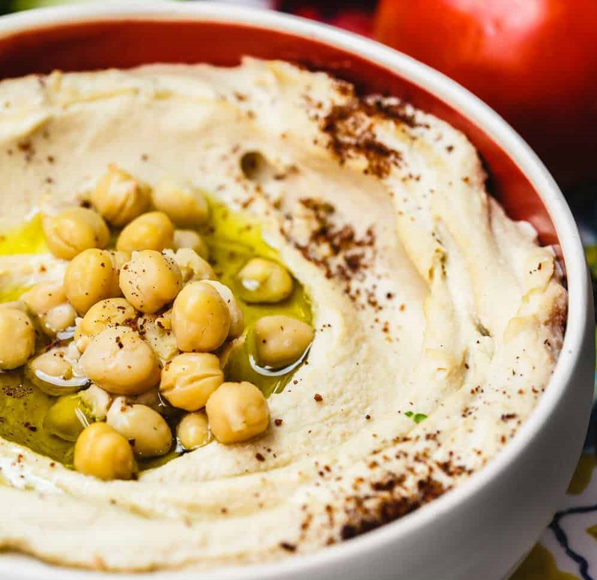
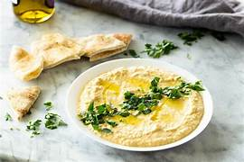

Quick hummus recipe
This recipe makes quick, tasty hummus, with no messing. It has been adapted from a number of different recipes that I have read over the years.
Hummus is a delicious thick paste used heavily in Greek and Middle Eastern dishes. It is very tasty with salad, grilled meats and pitta breads.
 